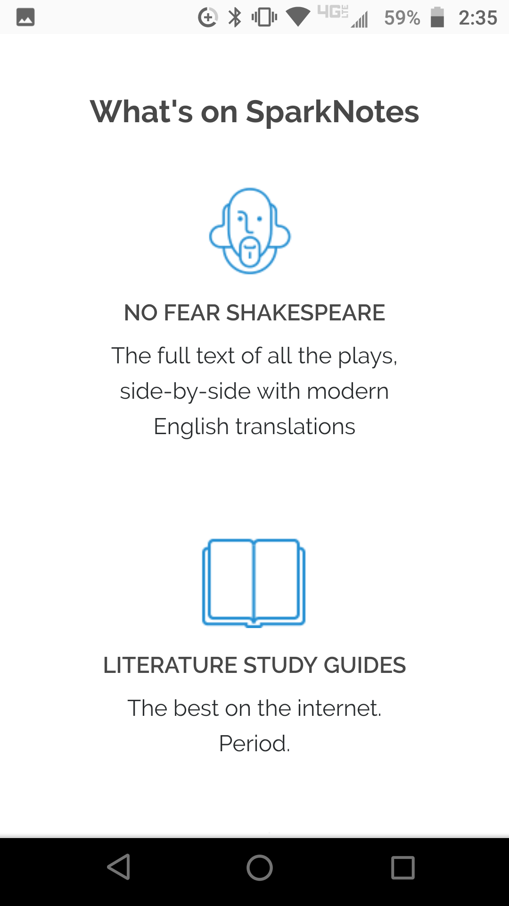
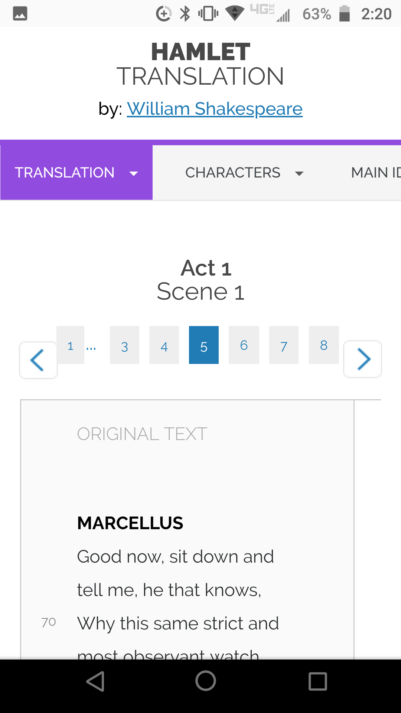
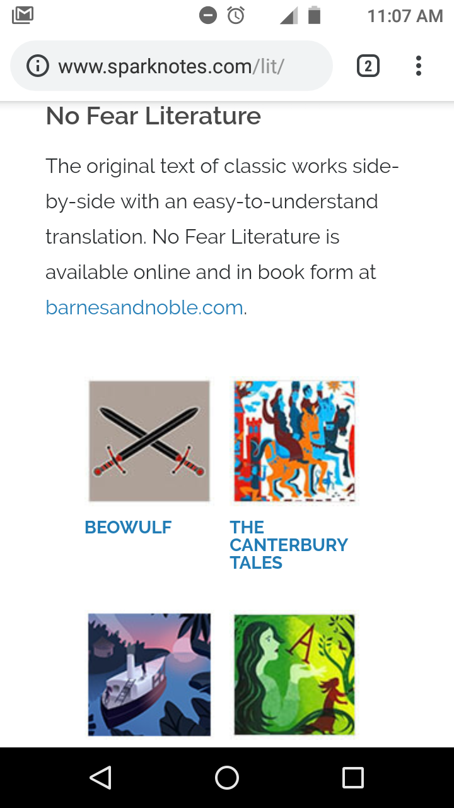
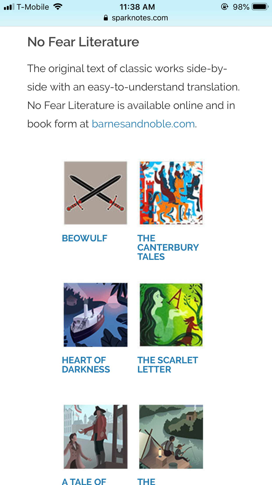
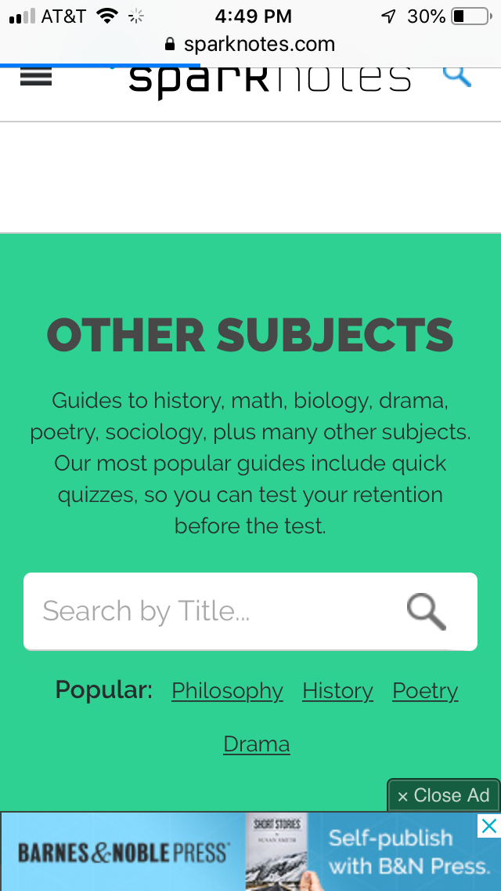

Design - Analysis Assessment
sparknotes.com
Design Principles
Proximity — Nicholas
The principle of proximity calls for like items to be grouped together. On this page under SparkNotes we start to see this. These items here are the services that are provided on the website and it gives you an easy place to find all of them. The pages uses white space to divide the topics so it is easy to read and understand the information that is on the page. The list then goes down a visual hierarchy of whats the most important things or the most looked for. The use of these things makes it easy to see where you are going and to find what you need without looking everywhere for it.
Alignment — Nicholas
The principle of alignment can be seen here in this example. Under Scene 1 they have buttons that range from 1-8 that are not only aligned with each other but also follow the rules of being edge aligned. These buttons fall under the category of being vertical aligned to the edge of the page. You can see the same thing at the top of the page with the bar that starts with Translation. The word Hamlet follows a different type of alignment called center alignment which draws an invisible line down the middle of the page. This picture uses both if not more types of alignment to make the page more pleasing to the eye.
Repetition — Westly
This website uses repetition in consistent square shapes throughout the site. The visual images are all the same style of art as well, which brings them together. The owner of the website also uses the same couple of fonts and font sizes, as well as the same dark grey. The creator also uses the same blue throughout the site
Contrast — Kendrick
This site uses good contrast throughout the entire website. It uses blue text on a white background making the text easy to read. They also used images on the page to create better contrast with the rest of the page. The site also separated the text and images throughout the page to create more contrast and make it more user friendly! This site is well put together and has great contrast to make it look and feel like a great working website. Using contrast on websites is an easy way to make your site look and feel that much better!
Typography — Tori
Spark Notes uses typography really well here. You can read the information while it is on the green block. There is also a noticeable difference between font and font size when looking at the heading vs body paragraph. They stuck to one font family but have two different fonts which helps differentiate the two. It is also nice how they bolded the Popular categories heading. It is also good practice to make links look like links so people will click on those links, especially if they are navigation links.
Site Purpose Statement
The purpouse of sparknotes is to aid readers in understanding the story line and symbolism in books that they read.
Target Audience
- Age: 14-30
- Occupation: This site is mostly used by students, and teachers.
- Income: $0- $35,000
- Other: Mostly highschool and college students, both genders, race doesn't play a role.
Persona
- Name: Greg Dokos

- Occupation: Greg is 23, single, he likes to read shakesphere in his free time, but doesn't always know whats going on. Dresses to nice for casual friday.
Hes unemployed. He likes to play Magic the Gathering. He is majornig in english education and Brigham Young University.
He is the sunday school president for his student ward. A little socially awkward. The last date he went on didn't go well because he talked to much about potatoes.
Greg is alergic to ALL animals. He doesn't like cats, and he loves saint bernards. He writes songs to his old girl friends about how he thought they were meant to be after 10 minutes on the date.
He is an apple user and loves to brag about his Ipad Pro. - Primary Device: His Iphone.
- Quote: I'm using sparknotes so I can understand shakesphere, and then use that to talk to women. I also use it for my homework and my free time reading.